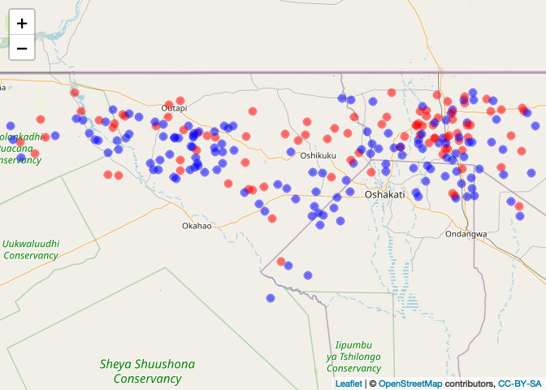

Week 4 - Analysis of spatial clustering
Aim
To introduce methods for exploring clustering in spatial data
Content
This post provides an introduction to methods for exploring clustering in different types of spatial data. The approaches will be explored together in R, followed by an opportunity to adapt the code and run the analysis yourself.
Datasets
- Malaria point prevalence data at the village level from Burkina Faso
- Leukemia data at the census tract level from New York State
- Malaria case event data and population controls from northern Namibia
First we will attach the libraries used for visualization.
library(rgdal)
library(raster)
library(ggplot2)
library(spatstat)
library(plotrix)
library(fields)
library(leaflet)
library(maptools)
library(RColorBrewer)
library(lattice)
library(geoR)
library(plotrix)
library(car) # contains a function for logistic transformation (log odds) to make more normal
These libraries are for spatial data management and point process analysis.
library(sp)
# Moran's I and spatial dependencies
library(spdep) # Spatial Dependence: Weighting Schemes, Statistics and Models
library(ape) # Analyses of Phylogenetics and Evolution
library(pgirmess) # Data Analysis in Ecology
# Libraries for point processes
library(spatstat)
library(splancs) # K-function
library(smacpod) # Spatial scanning statistic
We’re going to load in some malaria data from Burkina Faso and visualize it using Leaflet to see if we can initially assess if there may be evidence of spatial clustering. What do you think?
# Open BF malaria data
BF_malaria_data <- read.csv("https://raw.githubusercontent.com/phw272c/phw272c.github.io/master/data/BF_malaria_data.csv",header=T)
BF_Adm_1 <- raster::getData("GADM", country="BFA", level=1)
proj4string(BF_Adm_1) <- CRS('+proj=longlat +datum=WGS84 +no_defs +ellps=WGS84 +towgs84=0,0,0 ')
## Warning in proj4string(obj): CRS object has comment, which is lost in output; in tests, see
## https://cran.r-project.org/web/packages/sp/vignettes/CRS_warnings.html
# Calculate prevalence
BF_malaria_data$prevalence <- BF_malaria_data$positives / BF_malaria_data$examined
# What do the data look like - do you see evidence of spatial clustering?
pal = colorNumeric("Oranges", BF_malaria_data$prevalence)
leaflet(BF_malaria_data) %>% addTiles() %>% addCircleMarkers(~longitude, ~latitude, fillOpacity=1,
fillColor= ~pal(prevalence), radius=~prevalence*10, stroke=TRUE, weight=1) %>%
addLegend(pal = pal, values = ~prevalence)
Part I: Testing for spatial autocorrelation in point-level data
Global spatial autocorrelation
In this section we’re going to look at some more formal statistical tests of global spatial autocorrelation. We’ll look at two general ways of doing this: using ‘Moran’s I’ and using correlograms. These can each be done using multiple different packages in R.
Approach 1: Calculate Moran’s I using a distance based matrix
First we will look at the distribution of the prevalence data to see if they are close to normally distributed. If the are very skewed, we will need to transform them because the Moran’s I test produces a comparison to the normal distribution. Here, we will use the logit transformation to produce a more normal distribution. Then we will calculate the distance between each of the points and use the inverse of the distance matrix to produce a matrix of weights that we will use to calculate Moran’s I.
hist(BF_malaria_data$prevalence, xlab = "Prevalence", main = "")

BF_malaria_data$log_odds <- logit(BF_malaria_data$prevalence)
hist(BF_malaria_data$log_odds, xlab = "Log odds", main = "")

# Generate a distance matrix
BF.dists <- as.matrix(dist(cbind(BF_malaria_data$longitude, BF_malaria_data$latitude)))
dim(BF.dists) # 109 x 109 matrix of distance between all sets of points
## [1] 109 109
# Take the inverse of the matrix values so that closer values have a larger weight and vs vs
BF.dists.inv <- 1/BF.dists
diag(BF.dists.inv) <- 0 # replace the diagonal values with zero
# Computes Moran's I autocorrelation coefficient of x giving a matrix of weights (here based on distance)
Moran.I(BF_malaria_data$log_odds, BF.dists.inv) # from the "ape" package
## $observed
## [1] 0.0666352
##
## $expected
## [1] -0.009259259
##
## $sd
## [1] 0.01639855
##
## $p.value
## [1] 3.690017e-06
Approach 2: Create a correlogram to explore Moran’s I over different spatial lags. The “pgirmess” package requires spdep (which also has correlogram options) but is much simplier and user-friendly.
# Calculate the maximum distance between points
maxDist<-max(dist(cbind(BF_malaria_data$longitude, BF_malaria_data$latitude)))
maxDist
## [1] 7.534414
xy=cbind(BF_malaria_data$longitude, BF_malaria_data$latitude)
pgi.cor <- correlog(coords=xy, z=BF_malaria_data$log_odds, method="Moran", nbclass=10) # "pgirmess" package
# coords = xy cordinates, z= vector of values at each location and nbclass = the number of bins
plot(pgi.cor) # statistically significant values (p<0.05) are plotted in red

pgi.cor # distclass is midpoint for the bin
## Moran I statistic
## dist.class coef p.value n
## [1,] 0.4121237 0.13669304 6.435709e-04 1092
## [2,] 1.1618390 0.13700359 3.059924e-06 2176
## [3,] 1.9115538 0.09009855 2.482029e-05 2680
## [4,] 2.6612685 -0.02082828 6.589705e-01 2172
## [5,] 3.4109833 -0.10323722 9.946353e-01 1376
## [6,] 4.1606981 -0.16259353 9.997622e-01 1146
## [7,] 4.9104129 -0.20629178 9.991684e-01 662
## [8,] 5.6601277 -0.27492632 9.990240e-01 320
## [9,] 6.4098425 -0.11874035 7.536360e-01 128
## [10,] 7.1595572 -0.25618534 7.320096e-01 20
Based on the correlogram, over what spatial lags are there evidence for spatial autocorrelation? Is this clustering positive or negative?
Compare the correlogram to the results from a semivariogram approach:
BF_malaria_data_geo<-as.geodata(BF_malaria_data[,c("longitude","latitude","log_odds")])
# Generate and plot a binned variogram (10 bins) NB: have made for full max distance (even though likely inaccurate) for comparison
Vario<-variog(BF_malaria_data_geo,max.dist=7.53,uvec=seq(0.4121237,7.1595572,l=10))
par(mfrow=c(2,1))
plot(Vario)
plot(pgi.cor)
Approach 3: Calculate Moran’s I using a binary distance matrix. For this approach, we are going to create sets of ‘neighbors’ based upon their proximity. This approach can be used with point data but is especially useful for areal data, as we will see shortly.
For this approach, you will need to consider what is a sensible distance to classify points as neighbors. Considerations might include the scale of analysis and the distribution of points. In the comparison of different neighboring structures, you can see that increasing the distance within which one is considered a neighbor dramatically increases the overall number of neighbor linkages.
coords<-coordinates(xy) # set spatial coordinates to create a spatial object
IDs<-row.names(as.data.frame(coords))
# In this approach, we chose a distance d such that pairs of points with distances less than
# d are neighbors and those further apart are not.
Neigh_nb<-knn2nb(knearneigh(coords, k=1, longlat = TRUE), row.names=IDs) # using the "spdep" package
# assigns at least one neighbor to each and calculates the distances between
dsts<-unlist(nbdists(Neigh_nb,coords)) # returns the distance between nearest neighbors for each point
summary(dsts)
## Min. 1st Qu. Median Mean 3rd Qu. Max.
## 0.03727 0.12693 0.19004 0.22742 0.27488 1.10524
max_1nn<-max(dsts)
max_1nn # maximum distance to provide at least one neighbor to each point
## [1] 1.10524
# We create different neighbor structures based upon distance
Neigh_kd1<-dnearneigh(coords,d1=0, d2=max_1nn, row.names=IDs) # neighbors within maximum distance
Neigh_kd2<-dnearneigh(coords,d1=0, d2=2*max_1nn, row.names=IDs) # neighbors within 2X maximum distance
nb_1<-list(d1=Neigh_kd1, d2=Neigh_kd2) # list of neighbor structures
sapply(nb_1, function(x) is.symmetric.nb(x, verbose=F, force=T))
## d1 d2
## TRUE TRUE
# Checks for symmetry (i.e. if i is a neighbor of j, then j is a neighbor of i). Does not always hold for k-nearest neighbours
sapply(nb_1, function(x) n.comp.nb(x)$nc)
## d1 d2
## 1 1
# Number of disjoint connected subgraphs
# Plot neighbors comparing the two distances
par(mfrow=c(2,1), mar= c(1, 0, 1, 0))
plot(xy, pch=16)
plot(Neigh_kd1, coords, col="green",add=T)
plot(xy, pch=16)
plot(Neigh_kd2, coords,col="green", add=T)

To run a spatial test for clustering, we need to assign weights to the neighbor list. We will use the neighbor structure with all neighbors within the maximum neighbor distance between any two points.
#assign weights;
weights<-nb2listw(Neigh_kd1, style="W") # row standardized binary weights, using minimum distance for one neighbor
weights # "B" is simplest binary weights
## Characteristics of weights list object:
## Neighbour list object:
## Number of regions: 109
## Number of nonzero links: 1914
## Percentage nonzero weights: 16.10976
## Average number of links: 17.55963
##
## Weights style: W
## Weights constants summary:
## n nn S0 S1 S2
## W 109 11881 109 16.44475 442.0046
Using this weights matrix, we can now run the Moran’s I test on the logit transformed prevalence using the neighborhood matrix. How do the results compare to other approaches?
moran.test(BF_malaria_data$log_odds , listw=weights) #using row standardised weights
##
## Moran I test under randomisation
##
## data: BF_malaria_data$log_odds
## weights: weights
##
## Moran I statistic standard deviate = 4.7332, p-value = 1.105e-06
## alternative hypothesis: greater
## sample estimates:
## Moran I statistic Expectation Variance
## 0.154300895 -0.009259259 0.001194126
We can also use a simulation approach: we simulate the test statistic using random permutations of BF_malaria_data$log_odds so that the values are randomly assigned to locations and the statistic is computed nsim times; we compare the observed statistic to the distribution. What do you conclude about evidence for spatial autocorrelation?
set.seed(1234)
bperm<-moran.mc(BF_malaria_data$log_odds , listw=weights,nsim=999)
bperm
##
## Monte-Carlo simulation of Moran I
##
## data: BF_malaria_data$log_odds
## weights: weights
## number of simulations + 1: 1000
##
## statistic = 0.1543, observed rank = 1000, p-value = 0.001
## alternative hypothesis: greater
#statistic = 0.15, observed rank = 1000, p-value = 0.001
# Plot simulated test statistics
par(mfrow=c(1,1), mar= c(5, 4, 4, 2))
hist(bperm$res, freq=T, breaks=20, xlab="Simulated Moran's I")
abline(v=0.15, col="red")
We can now also take a look at running Moran’s I for areal data (polygons), using a dataset on leukemia from New York (Turnbull et al 1990). We will also use these data later in the course in week 7.
nydata <- rgdal::readOGR("https://github.com/phw272c/phw272c.github.io/raw/master/data/nydata.geojson")
## OGR data source with driver: GeoJSON
## Source: "https://github.com/phw272c/phw272c.github.io/raw/master/data/nydata.geojson", layer: "nydata"
## with 281 features
## It has 17 fields
#lets take a look at the data
head(nydata@data)
## AREANAME AREAKEY X Y POP8 TRACTCAS PROPCAS
## 0 Binghamton city 36007000100 4.069397 -67.3533 3540 3.08 0.000870
## 1 Binghamton city 36007000200 4.639371 -66.8619 3560 4.08 0.001146
## 2 Binghamton city 36007000300 5.709063 -66.9775 3739 1.09 0.000292
## 3 Binghamton city 36007000400 7.613831 -65.9958 2784 1.07 0.000384
## 4 Binghamton city 36007000500 7.315968 -67.3183 2571 3.06 0.001190
## 5 Binghamton city 36007000600 8.558753 -66.9344 2729 1.06 0.000388
## PCTOWNHOME PCTAGE65P Z AVGIDIST PEXPOSURE Cases Xm Ym
## 0 0.3277311 0.1466102 0.14197 0.2373852 3.167099 3.08284 4069.397 -67353.3
## 1 0.4268293 0.2351124 0.35555 0.2087413 3.038511 4.08331 4639.371 -66861.9
## 2 0.3377396 0.1380048 -0.58165 0.1708548 2.838229 1.08750 5709.063 -66977.5
## 3 0.4616048 0.1188937 -0.29634 0.1406045 2.643366 1.06515 7613.831 -65995.8
## 4 0.1924370 0.1415791 0.45689 0.1577753 2.758587 3.06017 7315.968 -67318.3
## 5 0.3651786 0.1410773 -0.28123 0.1726033 2.848411 1.06386 8558.753 -66934.4
## Xshift Yshift
## 0 423391.0 4661502
## 1 423961.0 4661993
## 2 425030.6 4661878
## 3 426935.4 4662859
## 4 426637.5 4661537
## 5 427880.3 4661921
For now, with this dataset we are only interested in seeing if there is global clustering in the area-level case incidence. In the dataset we find a ‘Cases’ variable that gives the estimated number of cases per area. We need to also consider the population in each area however, because areas with higher populations are more likely to have more cases just due to population size. So we will first create an incidence variable to normalize the case data by population size.
nydata$inc_per_1000 <- (nydata$Cases / nydata$POP8) * 1000
As these are areas and not points, we will not use distance to define the neighbors, but rather which polygons are directly touching one another along a boundary or boundary point.
sf::sf_use_s2(FALSE) # https://stackoverflow.com/questions/68478179/how-to-resolve-spherical-geometry-failures-when-joining-spatial-data
## Spherical geometry (s2) switched off
# Contiguity neighbors - all that share a boundary point
nydata_nb <- poly2nb(nydata) #queen contiguity
## Warning in st_is_longlat(pl): bounding box has potentially an invalid value
## range for longlat data
## Warning in st_is_longlat(pl): bounding box has potentially an invalid value
## range for longlat data
## Warning in st_is_longlat(x): bounding box has potentially an invalid value range
## for longlat data
## although coordinates are longitude/latitude, st_intersects assumes that they are planar
nydata_nbr <- poly2nb(nydata, queen=F) #rook contiguity
## Warning in st_is_longlat(pl): bounding box has potentially an invalid value
## range for longlat data
## Warning in st_is_longlat(pl): bounding box has potentially an invalid value
## range for longlat data
## Warning in st_is_longlat(x): bounding box has potentially an invalid value range
## for longlat data
## although coordinates are longitude/latitude, st_intersects assumes that they are planar
#coordinates
coords_ny<-coordinates(nydata)
#view and compare the neighbors
par(mfrow=c(1,2))
plot(nydata)
plot(nydata_nb,coords_ny,col="blue",add=T)
plot(nydata)
plot(nydata_nbr,coords_ny,col="green",add=T)

As above, we then set the weights for the neighbor matrix. The default is row standardized (each row sums to one), or binary, where neighbors are 1 and 0 otherwise.
##set weights - contiguity
#weights style W - row standardized
nydata_w<-nb2listw(nydata_nb)
nydata_w
## Characteristics of weights list object:
## Neighbour list object:
## Number of regions: 281
## Number of nonzero links: 1624
## Percentage nonzero weights: 2.056712
## Average number of links: 5.779359
##
## Weights style: W
## Weights constants summary:
## n nn S0 S1 S2
## W 281 78961 281 106.6125 1164.157
#weights style B - binary
nydata_wB<-nb2listw(nydata_nb,style="B")
nydata_wB
## Characteristics of weights list object:
## Neighbour list object:
## Number of regions: 281
## Number of nonzero links: 1624
## Percentage nonzero weights: 2.056712
## Average number of links: 5.779359
##
## Weights style: B
## Weights constants summary:
## n nn S0 S1 S2
## B 281 78961 1624 3248 41440
Based on this weights matrix, we can now do an initial check of spatial autocorrelation in the data. What do you conclude? We will return to this dataset in week 7.
##moran's tests of global spatial autocorrelation
moran.test(nydata$inc_per_1000,listw=nydata_w) #using row standardized
##
## Moran I test under randomisation
##
## data: nydata$inc_per_1000
## weights: nydata_w
##
## Moran I statistic standard deviate = 1.8649, p-value = 0.0311
## alternative hypothesis: greater
## sample estimates:
## Moran I statistic Expectation Variance
## 0.060405798 -0.003571429 0.001176865
Local spatial autocorrelation
The above approaches examined evidence for global spatial autorrelation. Now we’re going to look at local measures of clustering. One way to do this is using ‘Local Moran’s I’, which we will illustrate using the point-level data from Burkina Faso.
# First calculate the local Moran's I around each point based on the spatial weights object (binary based on at least one neighbor)
I <-localmoran(BF_malaria_data$log_odds, weights) # "spdep" package
# Print 'LISA' for each point
Coef<-printCoefmat(data.frame(I[IDs,], row.names=row.names(coords),
check.names=FALSE))
## Ii E.Ii Var.Ii Z.Ii Pr(z != E(Ii))
## [1,] 1.8125e-01 -7.7320e-03 2.0321e-01 0.4192 0.6750550
## [2,] -1.2819e-01 -7.9011e-04 1.6567e-02 -0.9898 0.3222658
## [3,] 1.7760e-01 -1.0791e-02 2.2400e-01 0.3980 0.6905976
## [4,] 1.6095e-01 -1.4860e-02 3.0721e-01 0.3172 0.7510925
## [5,] 1.4150e-01 -3.5181e-04 5.1692e-03 1.9730 0.0484971 *
## [6,] -9.3562e-01 -1.4721e-02 3.8417e-01 -1.4858 0.1373384
## [7,] 2.0481e-01 -3.1400e-03 3.1249e-02 1.1763 0.2394560
## [8,] 1.0326e-01 -3.9330e-04 3.9249e-03 1.6546 0.0980141 .
## [9,] 6.4866e-01 -4.1543e-02 3.9751e-01 1.0947 0.2736389
## [10,] 2.2870e-01 -3.6550e-03 4.0807e-02 1.1502 0.2500442
## [11,] -6.3207e-02 -8.4035e-04 1.7620e-02 -0.4698 0.6384687
## [12,] 5.2887e-02 -1.3459e-04 1.0018e-03 1.6752 0.0938957 .
## [13,] -3.1234e-02 -5.2641e-05 4.7285e-04 -1.4339 0.1515894
## [14,] -2.7457e-01 -3.2778e-03 2.9348e-02 -1.5836 0.1132854
## [15,] 1.8953e+00 -3.2990e-02 2.5998e-01 3.7819 0.0001556 ***
## [16,] 3.7821e-01 -5.6326e-03 3.2807e-02 2.1192 0.0340724 *
## [17,] -7.7082e-02 -5.2710e-05 3.9237e-04 -3.8888 0.0001008 ***
## [18,] 1.6616e-01 -2.7475e-03 1.6049e-02 1.3333 0.1824444
## [19,] 1.4622e-01 -2.3970e-03 1.6356e-02 1.1621 0.2452126
## [20,] 2.1928e-01 -4.6906e-03 2.5458e-02 1.4037 0.1603973
## [21,] 2.6115e+00 -4.3279e-02 4.6398e-01 3.8975 9.72e-05 ***
## [22,] 6.0848e-01 -3.6628e-03 2.7167e-02 3.7139 0.0002041 ***
## [23,] 1.4323e-01 -2.4940e-03 1.5713e-02 1.1625 0.2450275
## [24,] 2.7566e-03 -3.0994e-05 2.7841e-04 0.1671 0.8673174
## [25,] -2.7090e-01 -1.6415e-03 8.3470e-03 -2.9472 0.0032066 **
## [26,] 2.1542e+00 -3.8421e-02 3.6883e-01 3.6104 0.0003057 ***
## [27,] 1.6954e+00 -5.6051e-02 3.0991e-01 3.1460 0.0016550 **
## [28,] -4.3038e-01 -2.1343e-03 1.3451e-02 -3.6925 0.0002221 ***
## [29,] -4.5056e-01 -4.9503e-03 2.8853e-02 -2.6234 0.0087059 **
## [30,] 2.4252e+00 -1.2102e-01 8.6691e-01 2.7346 0.0062448 **
## [31,] 9.2584e-02 -8.5393e-05 6.9586e-04 3.5130 0.0004431 ***
## [32,] -3.1174e-02 -9.1729e-03 5.7403e-02 -0.0918 0.9268343
## [33,] 6.4106e-01 -4.5588e-03 3.6983e-02 3.3572 0.0007874 ***
## [34,] -1.3437e-01 -4.3284e-04 3.2208e-03 -2.3600 0.0182749 *
## [35,] -1.8818e-03 -5.0218e-06 3.1717e-05 -0.3332 0.7389483
## [36,] -5.0239e-01 -7.1528e-03 5.2867e-02 -2.1539 0.0312505 *
## [37,] 1.4153e-02 -4.8535e-05 2.1754e-04 0.9629 0.3356070
## [38,] 4.0998e-01 -3.6404e-03 3.2582e-02 2.2915 0.0219368 *
## [39,] 1.6427e-02 -5.2015e-03 7.6056e-02 0.0784 0.9374896
## [40,] -2.7545e-01 -1.2675e-03 1.1371e-02 -2.5712 0.0101353 *
## [41,] -1.2604e-01 -3.7519e-02 1.2875e-01 -0.2467 0.8051351
## [42,] 3.6265e-01 -5.1487e-02 1.8386e-01 0.9658 0.3341195
## [43,] 1.7248e-03 -1.1431e-06 3.8659e-06 0.8778 0.3800330
## [44,] -3.3785e-01 -1.1374e-02 3.8030e-02 -1.6741 0.0941034 .
## [45,] 3.0104e-01 -1.2465e-02 4.1632e-02 1.5365 0.1244130
## [46,] 6.7195e-02 -1.4421e-03 4.8702e-03 0.9835 0.3253470
## [47,] 1.4938e-01 -2.7255e-02 9.4529e-02 0.5745 0.5656223
## [48,] 4.3522e-01 -1.4718e-02 5.4593e-02 1.9257 0.0541442 .
## [49,] -1.6736e-01 -4.1614e-03 1.2665e-02 -1.4502 0.1470058
## [50,] 4.1369e-01 -3.7769e-02 1.1676e-01 1.3212 0.1864341
## [51,] -5.0223e-01 -3.4350e-02 9.2048e-02 -1.5421 0.1230389
## [52,] 3.6965e-01 -2.8057e-03 2.0828e-02 2.5808 0.0098569 **
## [53,] -3.0961e-01 -1.0434e-02 2.8654e-02 -1.7674 0.0771670 .
## [54,] -1.4140e-02 -6.2934e-05 2.1283e-04 -0.9649 0.3345770
## [55,] 2.0417e-01 -5.6924e-03 1.5707e-02 1.6745 0.0940283 .
## [56,] 3.0584e-03 -6.8129e-05 3.2507e-04 0.1734 0.8623295
## [57,] 4.8415e-01 -4.2565e-02 1.3093e-01 1.4556 0.1454901
## [58,] -1.3320e-02 -6.0679e-04 2.0509e-03 -0.2807 0.7789243
## [59,] -1.3369e-02 -3.2063e-05 7.7571e-05 -1.5143 0.1299608
## [60,] 5.3118e-02 -5.1915e-04 1.2013e-03 1.5475 0.1217365
## [61,] 1.0467e-01 -1.0876e-03 2.5153e-03 2.1086 0.0349789 *
## [62,] -4.9491e-02 -6.3766e-03 2.2590e-02 -0.2869 0.7742217
## [63,] 7.2047e-02 -4.2040e-03 1.9976e-02 0.5395 0.5895414
## [64,] -2.1793e-01 -4.1259e-03 1.4650e-02 -1.7665 0.0773166 .
## [65,] -2.9614e-01 -1.2994e-03 9.6605e-03 -2.9998 0.0027018 **
## [66,] 9.5520e-02 -1.4102e-02 4.9570e-02 0.4924 0.6224591
## [67,] 4.5932e-02 -1.8184e-02 5.7360e-02 0.2677 0.7889236
## [68,] 9.3542e-01 -4.6004e-02 2.2354e-01 2.0758 0.0379153 *
## [69,] 1.3055e-01 -5.0112e-03 5.5872e-02 0.5735 0.5663029
## [70,] 1.2863e-01 -2.1095e-03 6.1268e-03 1.6702 0.0948753 .
## [71,] 2.1775e-01 -1.4675e-03 1.1942e-02 2.0060 0.0448548 *
## [72,] -5.2296e-02 -1.0877e-03 5.9246e-03 -0.6653 0.5058642
## [73,] -4.2840e-02 -7.6232e-04 4.1538e-03 -0.6529 0.5138407
## [74,] -7.4349e-02 -2.2058e-04 1.5084e-03 -1.9087 0.0563044 .
## [75,] 2.4038e-03 -1.7851e-07 6.3646e-07 3.0134 0.0025836 **
## [76,] 3.0589e-02 -1.8076e-04 4.1842e-04 1.5042 0.1325193
## [77,] 3.3824e-01 -6.9083e-03 3.2737e-02 1.9076 0.0564413 .
## [78,] 5.1673e-01 -8.2918e-03 8.2092e-02 1.8324 0.0668895 .
## [79,] -2.1323e-02 -9.0292e-04 2.3893e-03 -0.4178 0.6761299
## [80,] -3.5618e-02 -1.5616e-04 4.3329e-04 -1.7036 0.0884505 .
## [81,] 7.7589e-02 -9.7284e-03 3.2582e-02 0.4837 0.6285717
## [82,] -7.0921e-02 -2.3914e-03 8.5061e-03 -0.7430 0.4574578
## [83,] 1.3071e-01 -1.9582e-03 5.9725e-03 1.7166 0.0860512 .
## [84,] -1.2850e-02 -7.8278e-06 2.9469e-05 -2.3657 0.0179962 *
## [85,] 2.9051e-02 -5.4606e-03 2.0445e-02 0.2414 0.8092748
## [86,] 2.2357e-01 -2.4572e-03 7.8750e-03 2.5470 0.0108643 *
## [87,] 3.9491e-01 -8.9711e-03 4.2424e-02 1.9609 0.0498962 *
## [88,] 7.6021e-02 -1.7009e-03 6.7619e-03 0.9452 0.3445681
## [89,] 2.7646e-01 -1.9951e-03 1.9878e-02 1.9750 0.0482679 *
## [90,] -7.2328e-02 -3.4831e-04 1.1776e-03 -2.0975 0.0359467 *
## [91,] 1.7124e-01 -1.9620e-03 6.6226e-03 2.1284 0.0333060 *
## [92,] 2.2277e-01 -2.9446e-03 1.3159e-02 1.9676 0.0491136 *
## [93,] -1.6416e-01 -4.6451e-03 2.0724e-02 -1.1081 0.2678358
## [94,] -8.5334e-02 -2.9359e-04 1.1688e-03 -2.4875 0.0128645 *
## [95,] 1.4523e-01 -3.1646e-02 1.0926e-01 0.5351 0.5925808
## [96,] 3.4949e-02 -9.9883e-04 6.3022e-03 0.4528 0.6506747
## [97,] -3.7727e-02 -7.8684e-04 4.6053e-03 -0.5443 0.5862018
## [98,] -8.3274e-02 -3.7601e-03 1.2669e-02 -0.7064 0.4799202
## [99,] -4.5113e-02 -1.8822e-04 8.9800e-04 -1.4992 0.1338279
## [100,] -5.3629e-01 -1.0667e-02 5.0357e-02 -2.3423 0.0191634 *
## [101,] 4.6925e-01 -3.1158e-02 2.0648e-01 1.1013 0.2707805
## [102,] 1.3653e-02 -1.0162e-05 5.9525e-05 1.7710 0.0765650 .
## [103,] 1.8685e-01 -2.6668e-03 1.6798e-02 1.4622 0.1436856
## [104,] -8.6863e-03 -3.2087e-05 2.8823e-04 -0.5098 0.6102264
## [105,] 2.9290e-02 -1.9567e-04 6.9752e-03 0.3531 0.7240497
## [106,] -2.0335e-02 -1.2801e-03 1.0419e-02 -0.1867 0.8519111
## [107,] 2.5801e-01 -5.5871e-03 3.5090e-02 1.4072 0.1593723
## [108,] 4.9384e-02 -2.7835e-04 4.0901e-03 0.7765 0.4374357
## [109,] 6.4535e-02 -1.2828e-03 1.3965e-01 0.1761 0.8601927
## ---
## Signif. codes: 0 '***' 0.001 '**' 0.01 '*' 0.05 '.' 0.1 ' ' 1
# Plot the spatial data against its spatially lagged values (the weighted mean of its neighbors)
nci<-moran.plot(BF_malaria_data$log_odds, listw=weights,
xlab="Log prevalence", ylab="Spatially lagged log prev", labels=T, pch=16, col="grey")
text(c(3,3, -5,-5),c(0.9, -1.9,0.9,-1.9), c("High-High", "High-Low", "Low-High", "Low-Low"), cex=0.8)

# Map points that are local outliers in the plot
infl<-nci$is_inf==T # find which points are statistically significant outliers
sum(infl==T) #13 true (12% - more than would expect by chance)
## [1] 13
x<-BF_malaria_data$log_odds
lhx<-cut(x, breaks=c(min(x), mean(x), max(x)), labels=c("L", "H"), include.lowest=T)
wx<-lag(weights,BF_malaria_data$log_odds)
lhwx<-cut(wx, breaks=c(min(wx), mean(wx), max(wx)), labels=c("L", "H"), include.lowest=T)
lhlh<-interaction(lhx,lhwx,infl,drop=T)
names<-rep("none", length(lhlh))
names[lhlh=="L.L.TRUE"]<-"LL"
names[lhlh=="H.L.TRUE"]<-"HL"
names[lhlh=="L.H.TRUE"]<-"LH"
names[lhlh=="H.H.TRUE"]<-"HH"
We can map the points to show the local clusters.
BF_malaria_localM<-as.data.frame(cbind(xy,names))
colnames(BF_malaria_localM)<-c("longitude", "latitude", "names")
BF_malaria_localM[c("longitude", "latitude")] <- lapply( BF_malaria_localM[c("longitude", "latitude")], function(x) as.numeric(as.character(x)) )
factpal <- colorFactor(c( "cyan4","coral4","coral","cyan","lightgrey"), names)
leaflet(BF_malaria_localM) %>% addTiles() %>% addCircleMarkers(~longitude, ~latitude, fillOpacity=1,
color= ~factpal(names), radius=4, stroke=TRUE, weight=1) %>%
addLegend(pal = factpal, values = ~names, title="Class")

Part II: Examining spatial point processes
In this section we’re going to look at a different type of point data, point process data, and some of the tests we can use to examine spatial autocorrelation in these data.
First we are going to load obfuscated malaria case data from northern Namibia.
CaseControl<-read.csv("https://raw.githubusercontent.com/phw272c/phw272c.github.io/master/data/CaseControl.csv")
# boundary file
NAM_Adm0<-raster::getData('GADM',country='NAM',level=0)
We can convert the data to a SPDF and plot the cases and ‘controls’
CaseControl_SPDF <- SpatialPointsDataFrame(coords = CaseControl[,c("long", "lat")],
data = CaseControl[,c("household_id", "case")])
cases<-CaseControl_SPDF[CaseControl$case==1,]
controls<-CaseControl_SPDF[CaseControl$case==0,]
# Let's plot and see what we have
case_color_scheme <- colorNumeric(c("blue", "red"), CaseControl_SPDF$case)
leaflet() %>% addTiles() %>% addCircleMarkers(data=CaseControl_SPDF, color = case_color_scheme(CaseControl_SPDF$case),
radius=3)

In the previous lecture, you already generated first order kernel density estimates and calculated the ratio of the density estimate of cases:controls. Now you will look at second order functions, summarizing the spatial dependence between events
We need to change the case data to a PPP data type (‘point pattern’)
CasesPPP<-as(cases, "ppp")
We use Ripley’s K function to summarize the spatial dependence between events at a wide range of spatial scales
K<-Kest(CasesPPP,correction=c("isotropic", "Ripley")) #uses the "spatstat" package
par(mfrow=c(1,1)) # Plot the estimate of K(r); note different border-corrected estimates ('iso', 'border' and 'trans')
plot(K, xlab="d (dd)", ylab="K(dd)") # Red dashed line is expected K value computed for a CRS process

E<-envelope(CasesPPP, Kest, nsim=999) # Plot confidence envelope using MC simulation
plot(E)

The K-function computed for cases assumes that H0 is complete spatial randomness. What are the limitations of this assumption?
Next we can look at the difference in Ripley’s K function between cases and controls, using two approaches that do essentially the same thing; #2 with hypothesis testing.
Approach 1: K function vignette from Bradley et al simply calculates the K function for cases and controls, and evaluates the difference.
First create a marked point process.
CaseControlPPP<-ppp(CaseControl$long, CaseControl$lat, range(CaseControl$long), range(CaseControl$lat), marks = as.factor(CaseControl$case))
# Calculate the K-function for cases
KX <- Kest(CaseControlPPP[CaseControlPPP$marks==1],correction=c("isotropic", "Ripley"))
plot(KX, sqrt(iso/pi) ~ r)

# Calculate the K-function for controls
KY <- Kest(CaseControlPPP[CaseControlPPP$marks==0],correction=c("isotropic", "Ripley"))
plot(KY, sqrt(iso/pi) ~ r)

# Calulate the difference in the two functions
Kdiff <- eval.fv(KX - KY)
plot(Kdiff, legendpos="float")
Approach 2: “Smacpod” package includes a function to estimate the difference in K function and plot simulated CI. Also includes a function to the test the significance based on these simulations.
kdest = kdest(CaseControlPPP, case = 2,nsim=999, level=0.95, correction=c("isotropic", "Ripley")) #"smacpod" package
## 1 has been selected as the case group
# Note that the case = is position of the marks, not the value! levels(CaseControlPPP$marks)
plot(kdest) # dark grey is min/max; light grey is confidence envelope (can change these with options)

kdplus.test(kdest) # Performs test of significance based on simulated confidence envelope and observed statistic
##
## Diggle and Chetwynd (1991) test for difference in K functions
##
## KD(r) = K_case(r) - K_control(r)
## case label: 1
## control label: 0
##
## null hypothesis: KD(r) = 0 for all r between 0 and 0.1653646
## alternative hypothesis: KD(r) > 0 for at least one r between 0 and 0.1653646
## test statistic: 859.8309
## p-value: 0.024
## nsim: 999
## simulation procedure: random labeling
Spatial Scan Statistics
Finally we will look at spatial scan statistics using R.
On your own, you can also explore using SatScan, a free software tool for spatial scan statistics that you can find here.
For this exercise, we will use the “smacpod” library in R to run the Kulldorf spatial scan statistic.
# Convert CaseControl to a "PPP" object for spatial scan
CaseControlPPP<-ppp(CaseControl$long, CaseControl$lat, range(CaseControl$long), range(CaseControl$lat), marks = as.factor(CaseControl$case))
out<-spscan.test(CaseControlPPP, nsim = 999, case = 2, maxd=.15, alpha = 0.05) # "smacpod" library
## 1 has been selected as the case group
plot(CaseControlPPP)
case_color_scheme <- colorNumeric(c("blue", "red"), CaseControl_SPDF$case)
leaflet() %>% addTiles() %>% addCircleMarkers(data=CaseControl_SPDF, color = case_color_scheme(CaseControl_SPDF$case),
stroke = FALSE, radius=2, fillOpacity=1)%>%
addCircles(lng = out$clusters[[1]]$coords[,1], lat = out$clusters[[1]]$coords[,2], weight = 2,
radius = out$clusters[[1]]$r*112*1000, color="grey")

Key Readings
Pullan, R. L., H. J. Sturrock, et al. (2012). “Spatial parasite ecology and epidemiology: a review of methods and applications.” Parasitology 139(14): 1870-1887.
Pfeiffer DU, Robinson TP, Stevenson M, Stevens KB, Rogers DJ & Clements ACA (2008). Spatial Analysis in Epidemiology. Chapters 4 & 5. Oxford University Press, Oxford, UK.
Citation for the leukemia data
Turnbull, B. W. et al (1990) Monitoring for clusters of disease: application to leukemia incidence in upstate New York American Journal of Epidemiology, 132, 136-143
Other good resources
Waller LA, Gotway CA (2004) Applied Spatial Statistics for Public Health Data. John Wiley & Sons, Hoboken, New Jersey.
- R library rsatscan can be used to run SatScan from R, see also here: rsatscan
Selection of research applications
Bejon, P., T. N. Williams, et al. (2014). “A micro-epidemiological analysis of febrile malaria in Coastal Kenya showing hotspots within hotspots.” Elife 3: e02130.
Brooker S, Clarke S, Njagi JK, Polack S, Mugo B, Estambale B, Muchiri E, Magnussen P & Cox J (2004). Spatial clustering of malaria and associated risk factors during an epidemic in a highland area of western Kenya. Tropical Medicine and International Health 9: 757-766.
Fevre EM, Coleman PG, Odiit M, et al. (2001). The origins of a new Trypanosoma brucei rhodesiense sleeping sickness outbreak in eastern Uganda. Lancet 358: 625-628.
Huillard d’Aignaux J, Cousens SN, Delasnerie-Laupretre N, Brandel JP, Salomon D, Laplanche JL, Hauw JJ & Alperovitch A (2002). Analysis of the geographical distribution of sporadic Creutzfeldt-Jakob disease in France between 1992 and 1998. International Journal of Epidemiology 31: 490-495.
Gaudart J, Poudiougou B, Dicko A, et al. (2006). Space-time clustering of childhood malaria at the household level: a dynamic cohort in a Mali village. BMC Public Health 6: 286.
Kulldorff M, Athas WF, Feuer EJ, Miller BA & Key CR (1998). Evaluating cluster alarms: A Space-Time Scan Statistic and Brain Cancer in Los Alamos, New Mexico. American Journal of Public Health 88, 1377-1380.
Kulldorff M & Nagarwalla N (1995). Spatial disease clusters: Detection and inference. Statistics in Medicine 14, 799-819. Odoi A, Martin SW, Michel P, et al. (2004). Investigation of clusters of giardiasis using GIS and a spatial scan statistic. Int J Health Geogr 3: 11.
Mosha, J. F., H. J. Sturrock, et al. (2014). “Hot spot or not: a comparison of spatial statistical methods to predict prospective malaria infections.” Malar J 13: 53.
Ngowi HA, Kassuku AA, Carabin H, et al. (2010). Spatial clustering of porcine cysticercosis in Mbulu district, northern Tanzania. PLoS Negl Trop Dis 4: e652.
Peterson I, Borrell LN, El-Sadr W, et al. (2009). A temporal-spatial analysis of malaria transmission in Adama, Ethiopia. Am J Trop Med Hyg 81: 944-949.
Sissoko, M. S., L. L. van den Hoogen, et al. (2015). “Spatial Patterns of Plasmodium falciparum Clinical Incidence, Asymptomatic Parasite Carriage and Anopheles Density in Two Villages in Mali.” Am J Trop Med Hyg 93(4): 790-797.
Washington CH, Radday J, Streit TG, et al. (2004). Spatial clustering of filarial transmission before and after a Mass Drug Administration in a setting of low infection prevalence. Filaria J 3: 3.